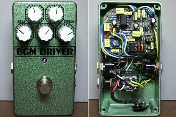
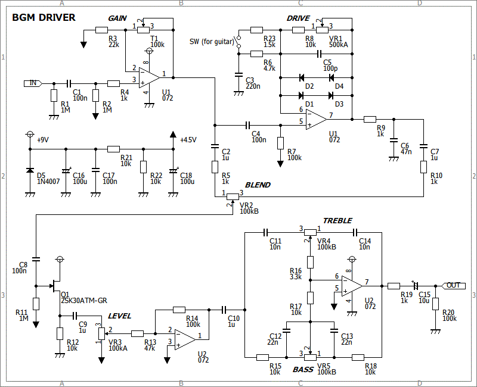
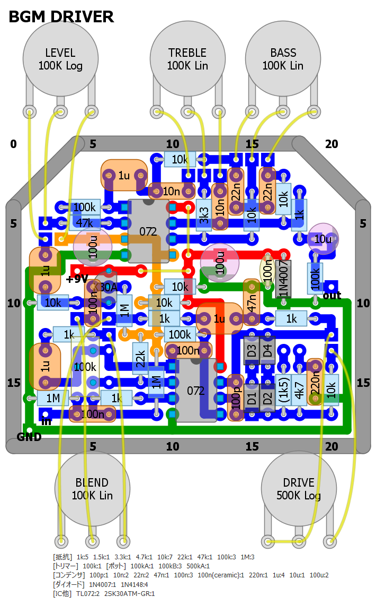
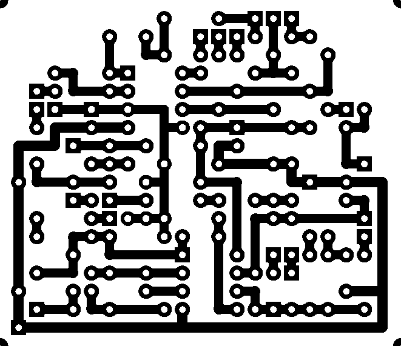

BGM DRIVER
2013年01月10日 カテゴリー：自作エフェクター（アナログ）

ベース用オーバードライブを作ってみました（スイッチを付けギターにも対応）。名前が全然思いつかなくて困りました。まぁBass、Guitar、原音Mixの略のような感じです。
▽回路図

非反転増幅の歪み音と原音をブレンド→トーン回路といった単純なものです。Sansampのトーン回路をそのまま流用しています。トリマーでゲインを上げることもできますが、深く歪ませるのはあまり想定していません。カップリングコンデンサを入れすぎな気はしていますが、念のためということで…
▽レイアウト

▽PCB（横55.9mm縦48.3mm）

今回からDIY Layout Creatorを最新のものにしましたので、解像度がよくなりました。ギター用に切り替えるスイッチは基板上のソケットにジャンパーを差し込む形式にしています。
音はありふれた歪みかなと思いますが、やはり原音を混ぜられるのはよいです。ギターでもほんの少し歪ませるというような音作りもしやすいです。目的通りのものを作ることができたかなぁと思います。
（2016年11月9日部品リスト・PCB追加）